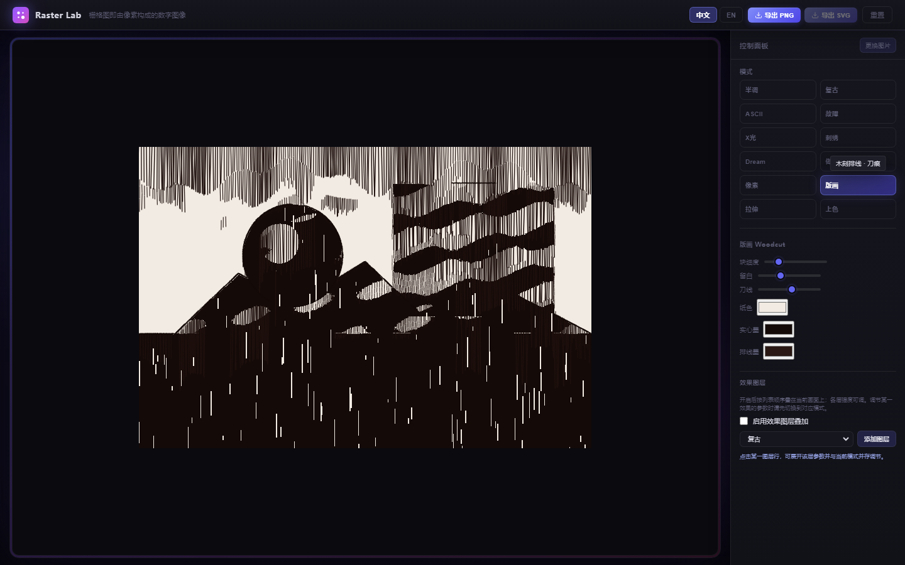
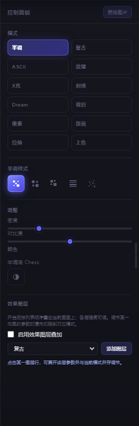
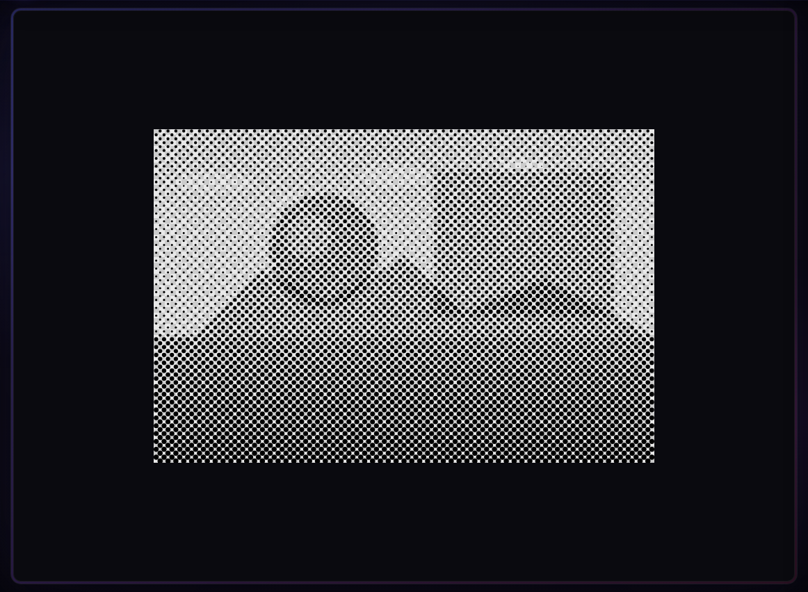
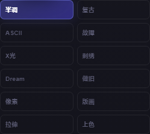
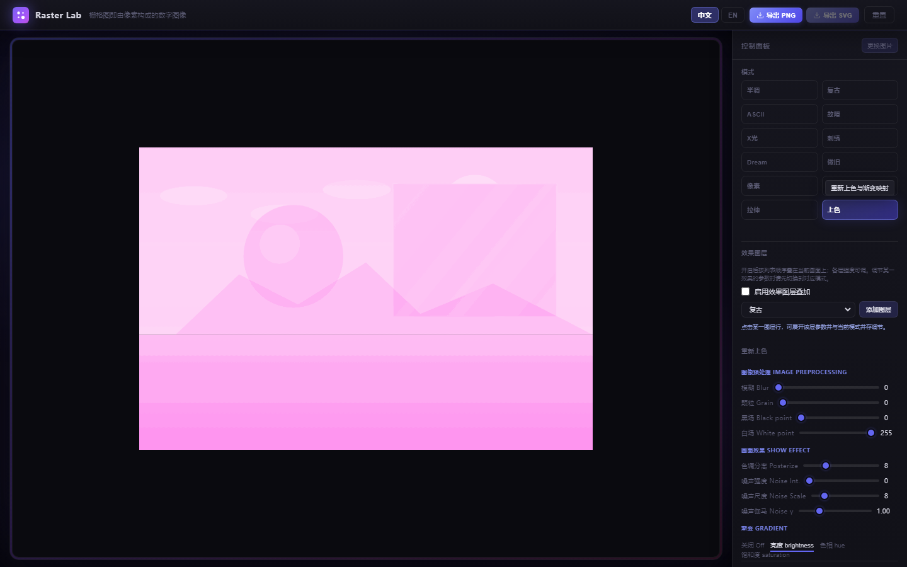
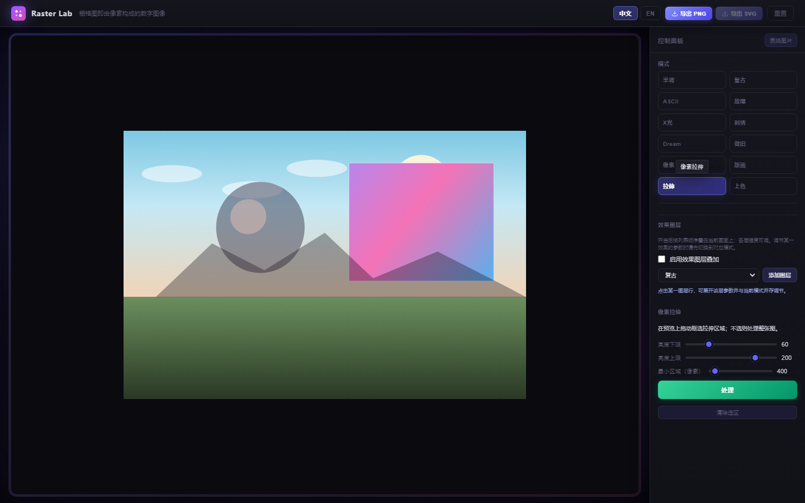
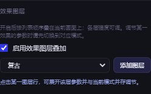
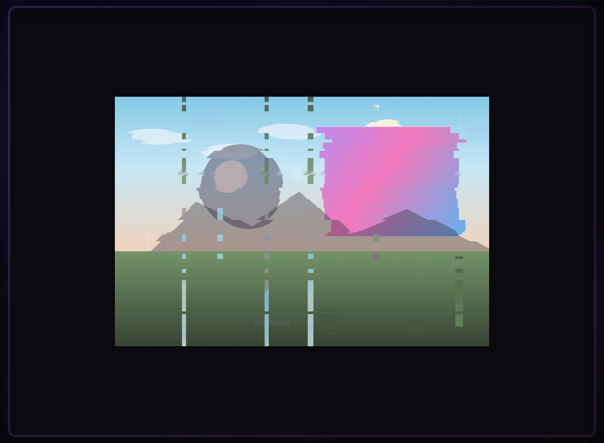

Visual communication · Design focus
著重：設計動機、在視覺傳達流程中的角色、設計思維、關鍵 UI/UX 決策；開發過程僅簡要提及。
Visual communication · Design focus
Emphasis: motivation, role in workflow, design thinking, key UI/UX decisions; development mentioned only briefly.
這個工具的核心出發點是一個在視覺傳達設計流程中常見的摩擦點：設計師想對圖像進行風格化處理（半調、故障藝術、版畫質感等），往往需要在 Photoshop 中操作複雜的濾鏡堆疊，無法即時、輕量地探索效果。
Raster Lab 的目標因此是：讓風格化圖像處理成為一個低門檻、即時回饋的創意實驗場（Lab）——特別適合在視覺概念發展的早期階段快速產出視覺方向。「Raster」呼應點陣媒介本質，「Lab」暗示開放探索而非一次性精修。
The starting point is a common friction: stylizing images (halftone, glitch, woodcut-like texture) often means heavy Photoshop stacks—not quick, lightweight exploration.
Raster Lab aims to be a low-barrier, real-time lab for image stylization—especially in early concept phases. Raster names the bitmap medium; Lab signals exploration over one-shot polish.
工具放在概念發散階段，而非精修交付階段：
快速回答「半調是否合適？」「版畫或故障哪個更合品牌？」等問題。半調可匯出 SVG；其餘模式以 PNG 銜接精修。
Positioned in divergent ideation, not final delivery:
Answers early questions fast. Halftone exports SVG; other modes use PNG into polish.
多種模式按視覺語言風格分組，避免功能重複。右側為印刷媒介維度中的版畫示例，與表格首列互相呼應。
| 維度 | 模式群 |
|---|---|
| 印刷媒介重現 | 半調、版畫、像素 |
| 時間感 | 復古、做舊 |
| 數字故障 | 故障、像素拉伸 |
| 感知異化 | X 光、刺繡、Dream Core |
| 色彩重組 | ASCII、重新上色 |

Modes grouped by visual language. At right: a Woodcut preview under the print media row—table and image read as one spread.
| Axis | Groups |
|---|---|
| Print media | Halftone, Woodcut, Pixel |
| Time / memory | Vintage, Worn |
| Glitch | Glitch, Pixel stretch |
| Estrangement | X-ray, Embroidery, Dream Core |
| Color | ASCII, Recolor |
進階能力留在後續 UI 決策頁以對應功能的單張截圖說明，避免同一畫面重複出現。
Advanced tools are shown once each on the UI slides that match the feature—no duplicate screenshots.
決策：主畫面在左；固定寬約 278px 的參數欄在右，未上傳圖片時隱藏。
依據：與 PS / Lightroom 類似——結果優先；空狀態不顯示空白參數列，降低混亂感。

Decision: Canvas left; ~278px panel right, hidden until upload.
Why: Like PS/LR—outcome first; no empty chrome before content.
決策：浮動動畫、漸層邊框、毛玻璃；hover 虛線變實線並發光。
依據：既是引導，也傳達工具本身的視覺品質；動態傳達「邀請上傳」。

Decision: Float, gradient border, glass; hover dashed→solid + glow.
Why: Onboarding plus signals craft; motion feels inviting.
4.3：模式用文字標籤 + hover Tooltip，降低「Dream Core」等名稱的認知成本。
4.4：半調 Style 用 34×34px 圖標——視覺選擇需視覺預覽；選中態用漸層 + glow。

4.3: Labels + tooltips for opaque names.
4.4: Halftone 34×34 icon grid—visual choice needs preview; active = gradient + glow.
決策：區塊順序為「圖像預處理 → 畫面效果 → 漸層映射」，對應真實色彩工作流。
依據：把技術管線與設計師思考順序對齊，減少來回試錯。

Decision: Preprocess → effects → gradient map—matches real remapping flow.
Why: Aligns pipeline with designer mental model.
決策：預覽上直接 Marquee 框選，而非僅數值。
依據：拉伸對「哪一區」極敏感——空間意圖與結果同屏，符合直接操作。

Decision: Marquee on preview, not numbers alone.
Why: Region matters—intent and result share one plane.
決策：提供可選的「效果圖層疊加」，多種質感可按順序、強度疊在當前預覽上，預設關閉。
依據：真實設計常要混合質感，但完整圖層系統對新手負擔大——故作為進階開關。右圖為效果圖層區塊特寫。

Decision: Optional effect layer stack—order and strength on top of the current preview, off by default.
Why: Real projects mix textures, but a full layer model is heavy for newcomers—so it’s an advanced toggle. Right: panel crop.
整體介面採深色底（約 #0a0a0f）與靛紫 accent（#6366f1），讓中央影像預覽成為視覺主角，參數與裝飾退為次要層次。
右圖僅截取左側主預覽欄（Glitch 模式），凸顯「畫布區」在畫面中的面積與對比，與 4.1 的右欄特寫形成對照。

Dark base (~#0a0a0f) and indigo accent (#6366f1) keep the central preview as the hero; chrome and parameters read as secondary.
Right: left preview column only (Glitch)—shows how much canvas area and contrast you get, paired with the 4.1 right-panel crop.
以單一 HTML 內嵌樣式與腳本迭代原型：先驗證半調與預覽管線，再依設計矩陣擴充模式；介面調整與演算法並行，透過實機拖放與匯出測試收斂體驗細節。
匯報重點仍在設計決策與使用者流程；技術棧選擇服務於「快速可分享、可演示」的作業情境。
Iterative single-file HTML prototype: halftone + preview pipeline first, then modes from the design matrix; UI and algorithms refined together with drag-drop and export testing.
Emphasis stays on design; the stack serves easy sharing and demo in class.
Raster Lab 的核心是：讓圖像風格化探索成為設計師的直覺行為，而不是瑣碎的技術操作——介面本身的品質，即是產品定位的說明。
Raster Lab makes exploring image stylization an intuitive act—not a technical chore. The UI’s craft is the clearest statement of intent.